Building services O&M principles
MVAC 空氣／水側、CAV／VAV 同壓差、消防 pre-action、電力分層、醫用氣體同 CCMS 嘅 O&M 原則同巡查思維——唔寫項目死數、唔標項目類型。
先識「系統點運作＋壞咗會點樣」，再對獲批圖同 O&M 手冊。
| 層 | 短標 | 你做咩 |
|---|---|---|
| 1 | 讀 | 記住呢句＝結論先行 |
| 2 | 對圖 | 點解＝原理；對獲批圖／O&M，唔背死數 |
| 3 | 現場 | 保養／巡查睇咩＝可執行一眼 |
| 4 | 升級 | Warn＝見到就當紅線；Escalate＝即時交有權人 |
見到紅線＝停手、護人、跟場規——唔「先試完再講」。
生命安全／失壓／誤水／失電／醫氣異常＝短時間內升級到有權決定嘅人。
點解：保養／巡查問答多數考推理：空氣由邊去邊、點解受控房用 CAV、點解 pre-action、Essential 同 UPS 分別護咩。背死數唔等於識巡查。
以泛用受控／潔淨送風空間為對位：全日鮮風 AHU（亦可能有混合風機組服務較低要求區）、CAV＋壓差穩定器、風冷冷水機、雙連鎖 pre-action（高敏感房常一房一閥組）、UPS 房氣體滅火、Normal／Essential／UPS、醫用氣體終端、CCMS。用嚟對位，唔用嚟代替獲批圖。
項目具體數字以獲批圖／O&M 為準。
| 縮寫 | 全稱 |
|---|---|
| AHU | Air Handling Unit／空氣處理機組 |
| CAV | Constant Air Volume／定風量 |
| VAV | Variable Air Volume／變風量 |
| HEPA | High-Efficiency Particulate Air／高效微粒空氣過濾 |
| MPPS | Most Penetrating Particle Size／最易穿透粒徑 |
| MVAC | Mechanical Ventilation and Air Conditioning／機械通風及空調 |
| ACH | Air Changes per Hour／換氣次數（每小時） |
| ΔP／DP | Differential Pressure／壓差（差壓） |
| CHW | Chilled Water／冷凍水 |
| EAF | Exhaust Air Fan／排風機（專用排風語境） |
| MSFD | Motorised Smoke Fire Damper／電動防煙防火閘 |
| UPS | Uninterruptible Power Supply／不間斷電源 |
| ATS | Automatic Transfer Switch／自動轉換開關 |
| STS | Static Transfer Switch／靜態轉換開關 |
| AVSU | Area Valve Service Unit／區域隔離閥箱 |
| CCMS | Central Control and Monitoring System／中央監控系統 |
| PTW | Permit to Work／准工證／工作許可 |
| DDC | Direct Digital Control／直接數位控制 |
| VFD | Variable Frequency Drive／變頻驅動（風機／泵） |
| EC | Electronically Commutated／電子換向（風機電機類型；跟產品） |
| FSD | Fire Services Department／消防處（規程語境） |
| EMSD | Electrical and Mechanical Services Department／機電工程署（規程語境） |
| HA | HA（規程語境縮寫；唔當項目客戶銘牌） |
| BSI | Building Services Inspector／屋宇裝備督察 |
| O&M | Operation and Maintenance／運作與保養 |
| Novec | 潔淨氣體滅火介質之常用品牌代稱（以獲批圖／產品為準） |
正文首見優先補括號；格式：縮寫（English／中文）。正文內英文縮寫可點／hover睇 EN＋中文全稱（來源＝本表）。
| 編號 | 主題 | 節 |
|---|---|---|
| D0 | 系統總圖（六塊） | §1 |
| D0a–f | 六塊 | §1.1 |
| D2 | 壓差 cascade＋穩定器 | §2.5 |
| D3 | CAV vs VAV | §2.4 |
| D4 | 風冷機冷凍循環 | §3.1 |
| D5 | Pre-action／雙連鎖 | §4.2 |
| D6 | 電源分層／切換空檔 | §5.1 |
| D7 | 醫氣 riser→AVSU→終端 | §6 |
| D8 | Duty／Standby | §2.7 |
| D9 | 氣體滅火聯鎖 | §4.3 |
| D10 | 排風／污側同「潔淨→污」 | §2.8 |
| D11 | 火警風機停機矩陣 | §4.4 |
| D12 | 全日鮮風 vs 混合風 | §2.0 |
圖解係簡線示意（高對比、大字標籤）；數字同條款以獲批圖／場內規程為準。無 D1（同 D0a 同構，唔復活）。
受控／潔淨送風空間＝風（潔淨＋壓差）＋水（冷凍／加熱）＋火（滅火＋聯鎖）＋電（不停電分層）＋醫氣＋監控；任何一環壞都會拖第二環。
氣流方向靠壓差同風量差；關鍵負荷靠電；滅火方式要配合房間用途同設備；醫用氣體係受規管生命支持；CCMS 係你最早收到警報嘅地方。一環異常會連鎖：例如過濾塞 → 風量跌 → 壓差掉；泵停 → 盤管唔冷 → 有人亂加風量 → 壓差再亂。
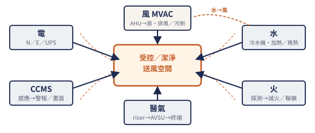
| 塊 | 你腦入面要有嘅圖 | 壞一截拖邊塊 |
|---|---|---|
| 空氣側 MVAC | 室外新鮮空氣 → AHU（過濾／冷卻／加熱／風機）→ 風管／風閘／CAV → 房間送風（常有 HEPA）→ 回／抽風 → 排走或處理；另有專用排風服務污側 | 濾塞／閘誤關／排風停 → 壓差同氣味方向反；拖消防聯鎖測試同 CCMS 警報 |
| 水側 | 冷水機 → 冷凍水供／回 → 水泵 → AHU 盤管；另路加熱／再熱水（跟圖） | 泵停／閥關／漏 → 房熱或失控；有人亂加風 → 再拖壓差 |
| 消防 | 探測 → 控制 → 滅火介質（水或氣）→ 風機／防火閘聯鎖 | 誤報停風／inhibit 未清 → 假保護；拖受控區失壓 |
| 電力 | 市電／發電機路徑 → Essential 分電 → UPS → 重要負載；STS／bypass | 切換失敗／留 bypass → 關鍵負荷裸晒；拖全部 |
| 醫用氣體 | 總管／riser → 分接 → AVSU → 房間終端；區警報 | 關錯 AVSU／壓力驟降 → 生命支持風險 |
| 監控 CCMS | 感應器 → 控制器 → 畫面／趨勢／警報 → 人去現場確認 | 假正常／長期 acknowledge → 現場已壞你唔知 |
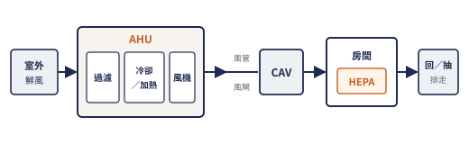
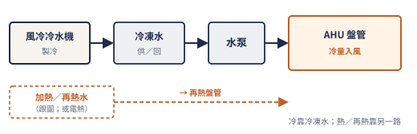
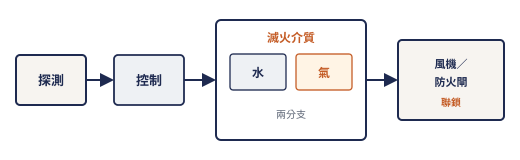
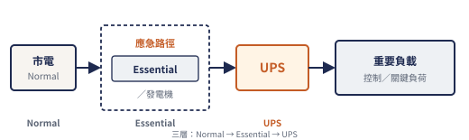
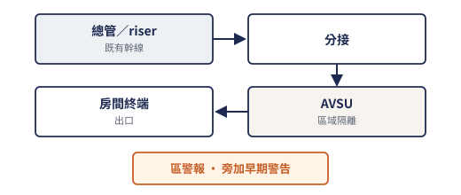
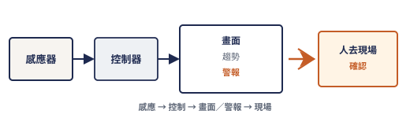
受控空間常用全日鮮風 AHU；壓差靠 CAV＋穩定器；冷水嚟自風冷冷水機；高敏感區用雙連鎖 pre-action；UPS／電池房用 Novec 類氣體；有 Essential 同 UPS；醫氣由既有 riser 分接；風機切換同壓差有 CCMS 點。
高要求受控房多用全日新鮮空氣 AHU；較低要求區可用混合風 AHU——O&M 唔好當全部 AHU 同一套。
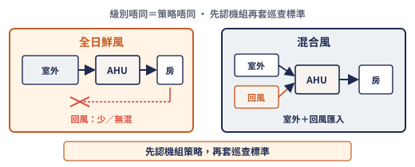
把混合風機當全日鮮風去「追潔淨」——會誤判同亂調。
受控／潔淨送風空間常用全日新鮮空氣 AHU：過濾 → 冷卻／加熱 → 送風；唔靠大量循環風「慳冷」去換潔淨級。機組入面仲可能有熱回收／UV／加濕／EC 主備等段——每段有意圖、有壞徵。
功能段一覽（定性；死數以獲批圖／O&M 為準）：
| 段 | 意圖 | 壞徵／風險 | 巡查一眼 |
|---|---|---|---|
| 過濾（粗／中效） | 護盤管同風機 | 差壓高、風量跌、旁通縫 | 差壓趨勢、墊片、門封 |
| 熱回收（如熱管） | 排／回側同送風側熱交換慳能 | 髒／洩＝能耗差＋交叉污染風險 | 兩側壓差異常、洩漏徵兆、段間密封 |
| 冷卻／加熱盤管 | 定溫；冷卻兼去濕 | 唔冷／唔熱、結露滴水、閥卡 | 水閥行程、翅片髒、地面水跡 |
| 再熱／加濕 | 定濕定溫收尾 | 過濕發霉、過乾、積水 | 加濕水質／積水、再熱閥 |
| UV（若有） | 線上殺菌輔助——唔當唯一潔淨手段 | 燈失效當「仲有」 | 時數／隔離／跟產品同場規 |
| 風機（含 EC 主備） | 連續送風 | 單點故障、切換抖壓 | 見 §2.7；變頻狀態 |
服務受控區嘅 AHU 多屬全日鮮風路線；同場可能另有混合風機組——先認策略再巡。AHU 房可能插入既有機組之間——分清邊部機服務邊區。
開機門做檢查要停機／上鎖掛牌（跟場規）；運轉中伸手入風機＝嚴重安全事故。
粗／中效保護盤管同風機；HEPA（High-Efficiency Particulate Air／高效微粒過濾）主要管潔淨，多數裝喺末端送／回風口；壓差唔係靠 HEPA「塞住」造出嚟。風機／變頻額定要考慮過濾（含 HEPA）髒阻上升——塞滿時風量同房壓會漂。
受控房末端送回風口路線常有 HEPA；分清「機組內過濾」同「末端 HEPA」。教學以末端送風 HEPA 為主；回風有無 HEPA 跟獲批圖。
未做完整性測試就當「已經 HEPA 合格」——唔可以。
風管係氣流嘅路；調風閘調風量，防火／防煙閘（含 MSFD：Motorised Smoke Fire Damper／電動防煙防火閘）喺火警時切斷蔓延——兩者用途唔好混。
調風閘卡住→房間風量同壓差錯；防火閘誤關或未聯鎖→火災時煙火經風管走，或者日常無故斷風。氣體滅火放電時，風機停同 MSFD 係一條時間序列：關得太慢＝氣體流失；亂試聯鎖＝可能誤停送風令受控區失壓。（整區風機停機矩陣見 §4.4。）
受控區風管改動多、同既有系統交接；氣體滅火同火警停風聯鎖要識「存在」，唔好現場亂試。
唔好手動卡住防火閘「方便送風」；火警時係責任問題。
CAV（Constant Air Volume／定風量）鎖風量，先鎖氣流方向；VAV（Variable Air Volume／變風量）跟負荷變風量，慳能但 ΔP 難穩。受控／潔淨壓差 cascade 多數用 CAV——唔係「VAV 高級、CAV 落伍」。
| CAV | VAV | |
|---|---|---|
| 風量 | 大致定死 | 隨負荷變 |
| 溫度點樣追 | 多用盤管水閥／再熱 | 多用加減風量 |
| ΔP cascade | 穩得住（設計意圖） | 房一變風，相鄰 ΔP 易抖 |
| 典型用途 | 受控／潔淨壓差故事 | 一般舒適空調慳能 |
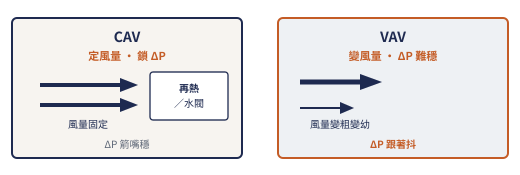
受控房壓差故事建喺 CAV＋壓差穩定器；識 VAV 係為答「點解唔用」、同理解大樓其他區可能唔同。
送風多過離開房間嘅風 → 正壓；空氣由高壓（較乾淨）流向低壓（較污）。Pressure stabiliser（壓差穩定器）喺門關時把壓差鎖近設計值。
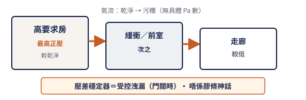
高要求房門開會唔會拖低相鄰受控房——文件未寫死就要問清楚。
Setback＝慳風／慳能模式；通常仍要維持壓差方向同溫濕大致受控，但全速 ACH 唔維持。Setback 唔止整體減風——可能係某幾個送風箱關、某幾個維持，同時減走廊抽風，仍鎖壓差方向。
受控區有 Normal／Setback 控制意圖；細節風量同邊個 box 關——對 AHU／CAV 附錄同獲批圖。
人手覆寫 setback 後當「已經日間模式」——常見失壓源。
主機壞／跳脫 → 備機自動或按程序頂上；切換瞬間風量同壓差會抖——要識睇警報同恢復，唔係當「轉咗就無事」。
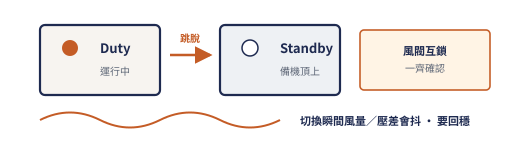
運轉中亂切、或者關掉唯一運行風機「聽吓靜唔靜」——可以令受控區失壓。
正壓受控房靠送−抽差撐方向；污側／氣味源靠專用排風（EAF 等）帶走——唔好假設「有 AHU 送風就夠」。
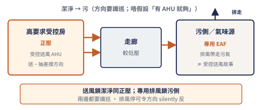
污側排風長期停而受控房仍「看似正常」——方向可能已 silently 反，要升級查。
風冷機＝室外用風扇帶走冷凝熱，製造冷凍水畀 AHU 盤管；冇冷卻水塔，但室外盤管髒同氣流受阻一樣會冇冷。
氣流短路：室外排熱被牆／鄰機擋返吸入＝「吸自己嘅熱風」——高壓跳脫風險。盤管髒＝同樣散熱差。
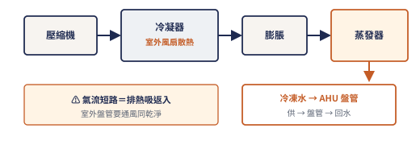
制冷劑操作屬受規管工種——唔識唔做。
冷量係「水運」去盤管；順序記：泵提供流量 → 閥調節 → 盤管換熱。有冷機但泵停／閥關＝房一樣熱。
帶壓系統排污／拆法蘭要跟程序；燙／凍水都可以傷人。
冬天盤管凍裂同日常滲漏一樣可以停晒受控區服務；水質差→結垢／腐蝕→流量同換熱雙輸。
定溫定濕唔止冷凍水——加熱／再熱盤管同熱水回路（或電熱——跟圖）壞咗一樣令房失控。冷＝冷凍水；熱／再熱＝另一路；兩路閥都要識巡。
圖：見 D0b（加熱／再熱第二細箭）；唔另畫同構全頁水側圖。
唔好假設「有冷就有舒適」——缺再熱一樣投訴湧現。
新支管接入運作中冷凍水／熱水／風管幹管時，O&M／BSI 要識問：其他區冷量／風會唔會斷？ 唔可以假設「新區完工＝舊區無感」。
接駁中或接駁後他區服務中斷而未升級——當營運事故鏈，唔當「施工順便」。
濕式＝管內長期有水，熱玻璃膽爆就出水；Pre-action＝平時管內多數係氣／乾，要滿足啟動條件先入水／出水——減少誤射水摧毀受控空間同設備。
高敏感受控區走 pre-action；支援區可能仍係濕式——分區唔好當全部一樣。
Double interlock＝要兩類獨立條件齊（例如探測＋另一聯鎖信號／釋放步驟，以獲批圖同產品說明為準）先進入出水序列——邏輯上係 AND，唔係 OR。多間高敏感房時，設計常係每房獨立雙連鎖閥組——隔離維修同誤射範圍可控。
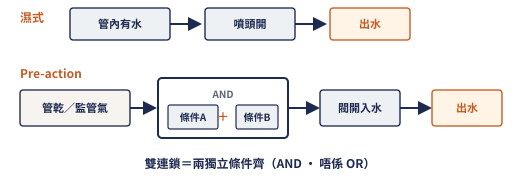
禁止為趕工期永久短接消防信號。
發現短接／inhibit 範圍大過標稱——即時升級，唔自行「當臨時」。
電氣房／UPS 房常用潔淨氣體滅火（例如 Novec 類）——唔靠浸水；放電前要走人、關風機／防火閘，避免氣體流失同人員危險。
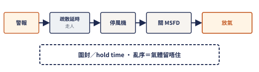
任何「試放／洩放」只可以由授權人按程序做。
防煙防火唔止關閘——常見策略係探測觸發後停相關送／排風機，避免風管送煙；氣體滅火房另有「停風＋關閘保 hold time」（§4.3）。聯鎖係一條鏈；施工期主系統暫停就要有臨時探測＋看守＋PTW。
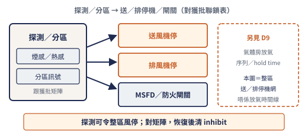
聯鎖被短接／長期 inhibit——假保護，即時升級。
Normal＝市電日常；Essential＝市電失電後由發電機等應急路徑撐嘅重要負荷；UPS＝切換空檔都唔俾斷嘅「唔間斷」段（電池＋逆變）。Essential ≠ UPS bypass。
電池自主時間：有時限、要測、會老化——實際分鐘數跟獲批圖／O&M，唔背假數。
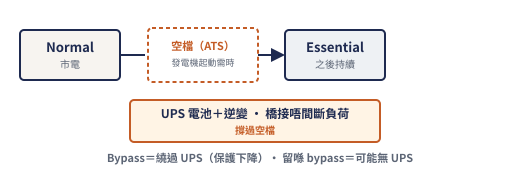
營運中場地帶電操作要 PTW；唔好當「只係睇吓」就開電蓋。
STS（Static Transfer Switch）＝兩路電源之間快速自動切；Bypass＝維修時讓負荷暫時繞過 UPS 電子路徑——方便維修，但期間保護等級可能下降。Bypass／旁路只喺呢個 UPS 維修語境用——唔好同 Essential「應急路徑」撈亂。
任何影響受控區電力嘅切換＝計劃工作：時段、通知、後備、回退、誰可以喊停。
醫用氣體係受規管生命支持系統：總管分接 → AVSU → 房間終端；區警報係早期警告——唔教你親手焊／亂關閥。常見品種包括氧氣（O2）、真空（Vacuum）、醫療空氣（如 MA4）等——以獲批圖為準。
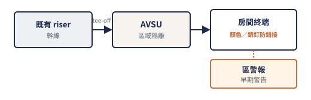
唔准當普通壓縮空氣管路去「試噴」；唔准私下關閉服務中受控區嘅 AVSU。
氣味／壓力驟降／警報 → 即時按場內應急同工程程序。
CCMS 係耳目：警報、狀態、趨勢；唔係俾你隨便當遊戲改控制參數。巡查要識點類型——唔止「有畫面」。
點類型（教學分類；實際點表以場為準）：
| 類 | 例子（概念） | 你用嚟做咩 |
|---|---|---|
| 設備狀態／故障 | AHU／EAF 運行、泵、冷機、風機跳脫 | 先畫面後現場；對 Duty／Standby |
| 環境／程序 | 房溫濕、壓差、過濾差壓 | 趨勢睇「慢慢漂」 |
| 消防介面 | Pre-action 監管、氣體、聯鎖／inhibit | 同生命安全優先級；分開普通設備故障 |
| 電力／UPS | UPS 模式、電池健康、ATS | 查 bypass／Fault |
| 能源／排程（若有） | 電能、照明排程 | 營運節能耳目；細節跟場同規程 |
無授權唔好改 iBMS／CCMS 程式或 set-point。
巡查係固定節奏＋異常升級；唔係等到壞先學問。每條動詞開頭。
先畫因果鏈再動手；見到 A 唔等於只修 A。每條：可能原因 → 先排除 → 升級。
| 見到 | 可能原因 → 先排除 | 升級若 |
|---|---|---|
| 一間房正壓掉 | 門開？穩定器堵？抽風過大？送風不足？相鄰房？→ 先門同風量差，唔先拆 HEPA | 門關仍低同多房一齊——升 AHU／聯鎖 |
| 兩間房互相拖 | 門同時開？共用走廊大洩漏？→ 記錄操作模式 | cascade 方向疑似被短路 |
| 全層風細 | AHU 跳？過濾塞爆？防火閘誤關？火警停機未复？→ 先機組同聯鎖／inhibit | 濾阻＋VFD 頂高仍不足 |
| 房溫高但壓差仲喺 | 水側／盤管／閥／再熱失效 → 唔好加大風量硬搶冷 | 水側授權工作 |
| 切換風機後壓差抖完唔返 | 備機真起動？風閥互鎖？→ 對 CCMS 同現場燈 | 暫態過後仍低＝未完成切換 |
| 氣味倒灌／方向疑似反 | 專用排風停？污側閘關？transfer 封死？→ 先排風同污側 | 排風長期停而受控房「看似正常」 |
| Setback 後某房失壓 | 關錯 CAV？走廊抽風減太多？覆寫未复？→ 對邏輯表 | 方向反轉跡象 |
| 見到 | 可能原因 → 先排除 | 升級若 |
|---|---|---|
| 有機無冷 | 泵？閥？冷機警報？盤管氣阻？strainer？→ 跟 ΔT 同流量 | 制冷劑／高壓跳 |
| 有冷但仍投訴「唔舒服」 | 再熱／加濕失效？→ 查熱路同濕度 | 閥卡／電熱故障 |
| 天花滴水 | 保溫破（冷凝）定眞漏（補水頻密）→ 分開 | 帶壓漏要授權停 |
| 泵又震又響 | 氣蝕／對中／軸承／底座 → 停機檢查屬授權 | 吸程／過濾塞相關 |
| 室外機高壓跳 | 盤管髒？氣流短路？→ 先環境同清潔 | 唔先怪壓縮機 |
| 接駁後他區熱／失壓 | 隔離未复？平衡未做？旁通留住？→ 查 PTW 範圍同復原 | 當營運中斷鏈 |
| 見到 | 可能原因 → 先排除 | 升級若 |
|---|---|---|
| 警報風暴 | 裝修塵？眞火？電源閃？→ 先生命安全，再分類 | 塵觸煙感致整區停風 |
| 長期靜音／acknowledge | 邊個消音？根因未除？→ 當未解決故障 | 消防／氣體／UPS 介面 |
| 畫面正常現場唔正常 | 傳感器壞／裝錯位／點名錯？→ 以安全側現場為準 | 趨勢證「假正常」 |
| UPS 以為有其實無 | 面板係咪 Bypass？→ 維修後清 bypass | ride-through 斷咗 |
| 火警後風唔返 | 停機矩陣未复？inhibit 留住？→ 對矩陣同復歸程序 | 假保護／長期失壓 |
受控區最痛通常係失壓／誤水／失電三條線——加埋排風停致方向反同聯鎖假保護——任何一條都要短時間內升級到有權決定嘅人。
呢本係 O&M／原理筆記；項目數字同文件細節以獲批圖／O&M為準。
跟獲批圖、場內消防／機電／醫氣規程同合約 O&M。